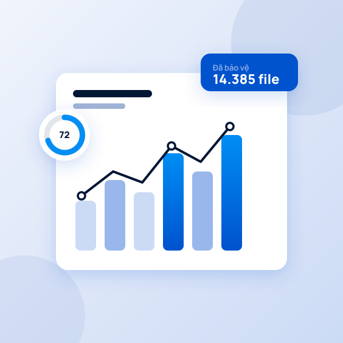

Blog Wistorix
Mẹo dùng Google Drive gọn gàng
Từ file công khai quên thu hồi đến file trùng lặp ngốn dung lượng, Wistorix chỉ ra và xử lý giúp bạn.

16/09/2025
Cách tìm và thu hồi toàn bộ file Google Drive đang công khai
Hướng dẫn thực tế về cách kiểm soát quyền chia sẻ, dọn dung lượng và bàn giao tài liệu trên Google Drive, viết cho người dùng bình thường, không cần biết kỹ thuật.
Bài mới
Bài viết gần đây
Hướng dẫn dọn dẹp, bảo mật và chia sẻ file trên Google Drive đúng cách.


Miễn phí lần quét đầu tiên

Drive của bạn đang
công khai những gì?
Cài Wistorix vào Chrome, đăng nhập Google và quét trong vài phút. Bạn sẽ thấy toàn bộ file đang công khai, rỗng hay trùng lặp, và xử lý ngay tại chỗ.